Créditos de las fotos
Fotografías de Pixabay, usadas bajo la licencia de contenido de Pixabay. A las fotos de objetos se les ha quitado el fondo y se han recortado. Gracias a sus autores.
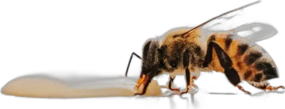
abejaHebertSantos · Pixabay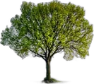
arbolwinluk06 · Pixabay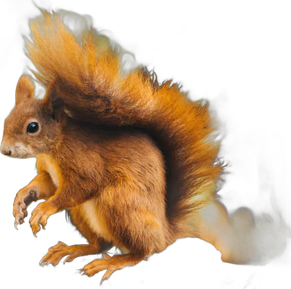
ardillaparkstonephotography · Pixabay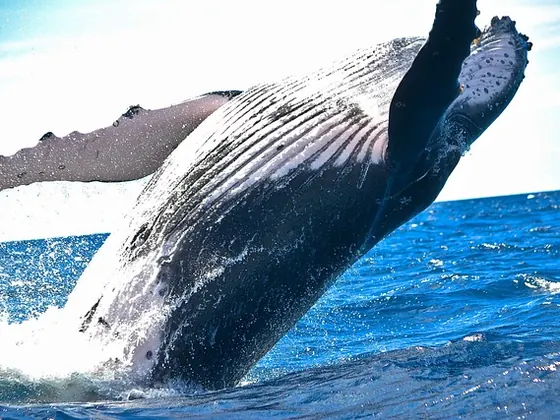
ballenaPexels · Pixabay- balonSilberfuchs · Pixabay
- bloquesTheresaMuth · Pixabay
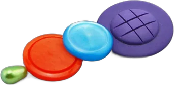
botonLisaRedfern · Pixabay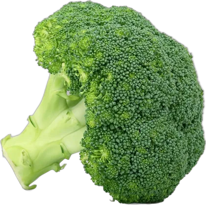
brocoliShutterbug26 · Pixabay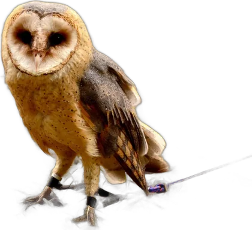
buhoDanielPolak · Pixabay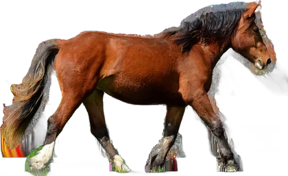
caballomaja7777 · Pixabay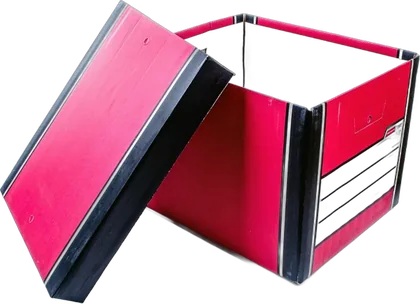
cajaPublicDomainPictures · Pixabay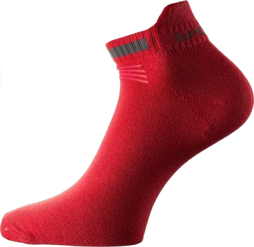
calcetinHumusak · Pixabay- camion-bomberosWaukesha · Pixabay
- cara-contentaStockSnap · Pixabay
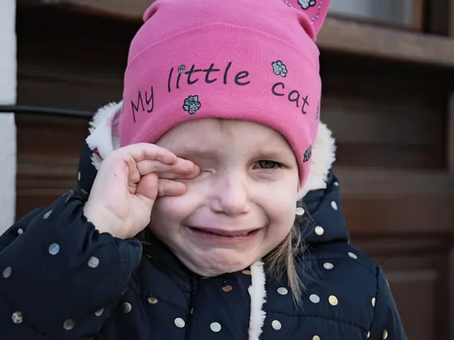
cara-tristeua_Bob_Dmyt_ua · Pixabay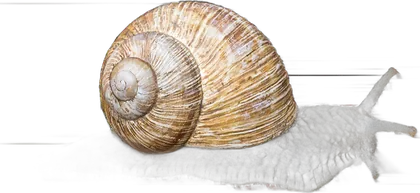
caracolMomentmal · Pixabay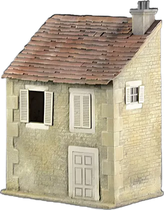
casaHoggyArt · Pixabay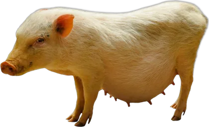
cerdogarten-gg · Pixabay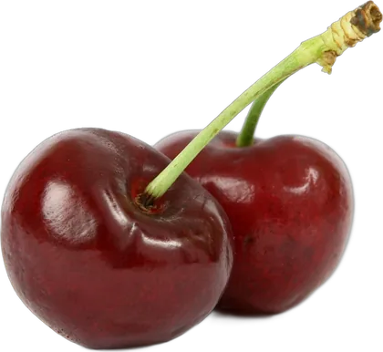
cerezasShutterbug26 · Pixabay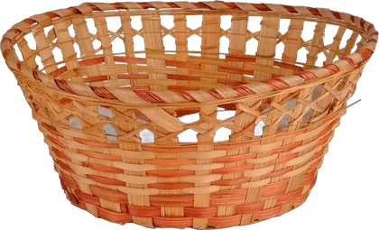
cestaLarisa-K · Pixabay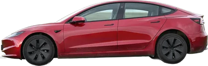
cocheJACLOU-DL · Pixabay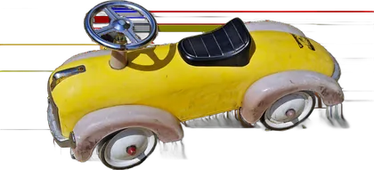
coche-jugueteRalphs_Fotos · Pixabay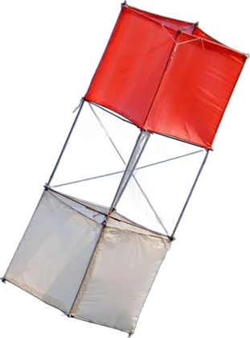
cometaignartonosbg · Pixabay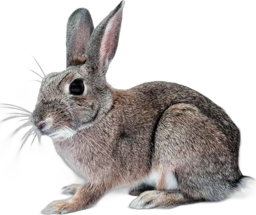
conejocristty · Pixabay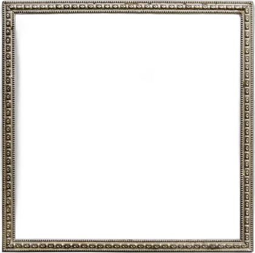
cuadroBRRT · Pixabay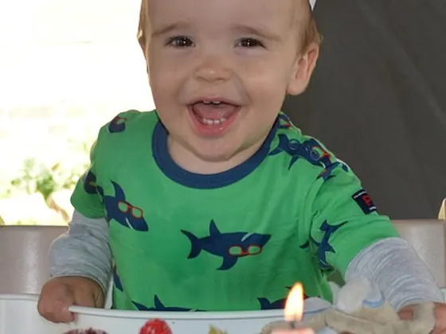
cumpleanosBen_Kerckx · Pixabay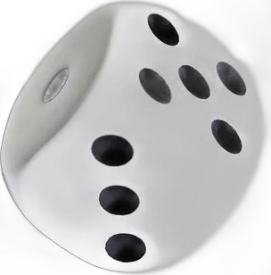
dadoFernandoChile · Pixabay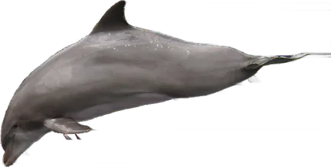
delfingarten-gg · Pixabay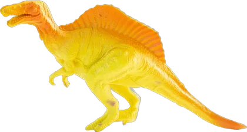
dinosaurio-juguetelucasgeorgewendt · Pixabay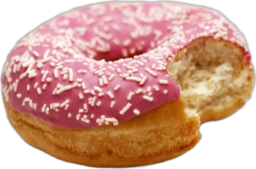
donutNikasucha · Pixabay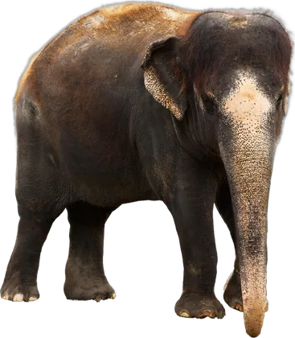
elefantePublicDomainPictures · Pixabay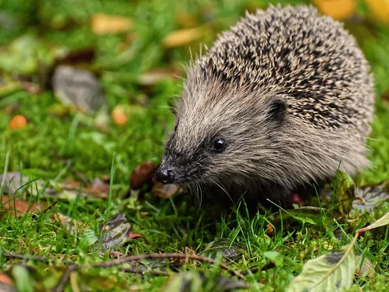
erizoAlexas_Fotos · Pixabay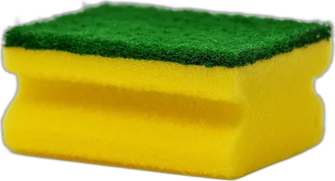
esponjaRalphs_Fotos · Pixabay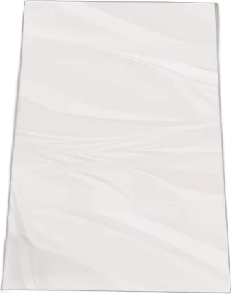
foliokalhh · Pixabay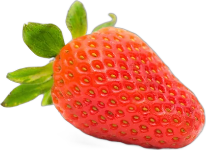
fresaClickerHappy · Pixabay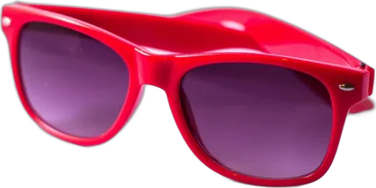
gafas-solniekverlaan · Pixabay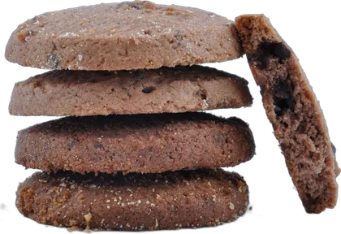
galletaAziko25 · Pixabay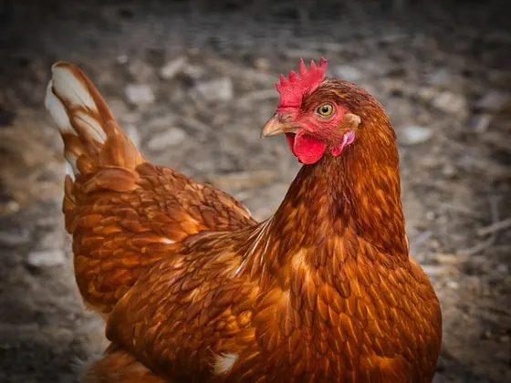
gallina9883074 · Pixabay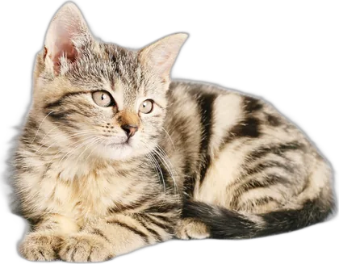
gatoChiemsee2024 · Pixabay- girasolWardZhou · Pixabay
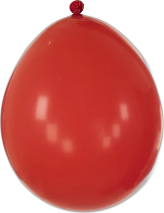
globoEngin_Akyurt · Pixabay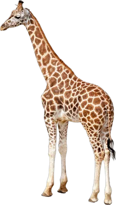
jirafaPublicDomainPictures · Pixabay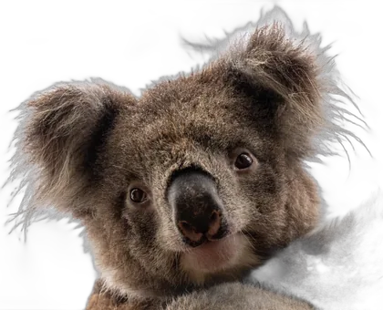
koalaxiSerge · Pixabay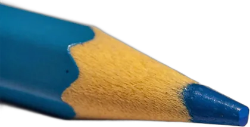
lapizinproperstyle · Pixabay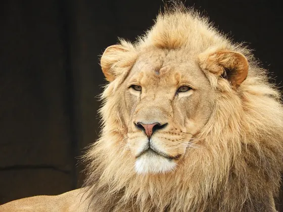
leonpoppy008 · Pixabay- libroDarkmoon_Art · Pixabay
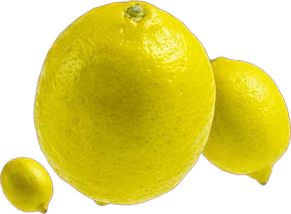
limondancingboxes0 · Pixabay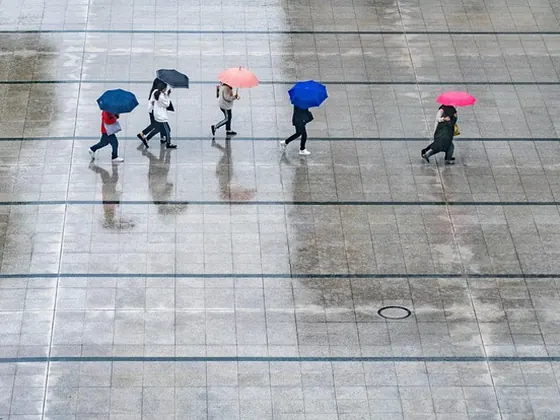
lluviawal_172619 · Pixabay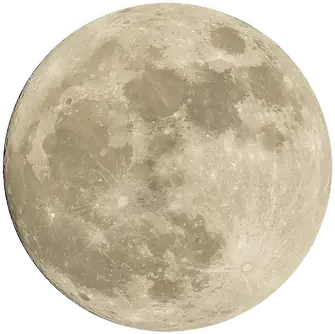
lunaPexels · Pixabay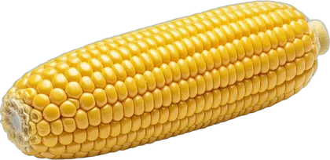
maizMuhammadHammad7788 · Pixabay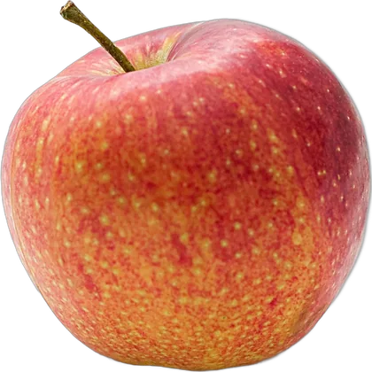
manzanaPexels · Pixabay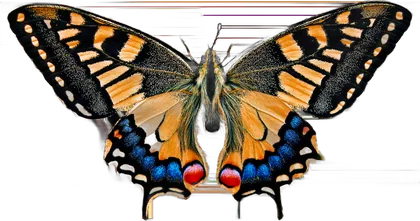
mariposagarten-gg · Pixabay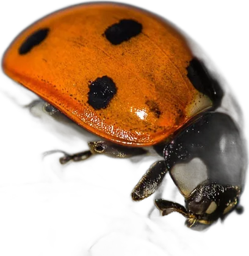
mariquitaRoyBuri · Pixabay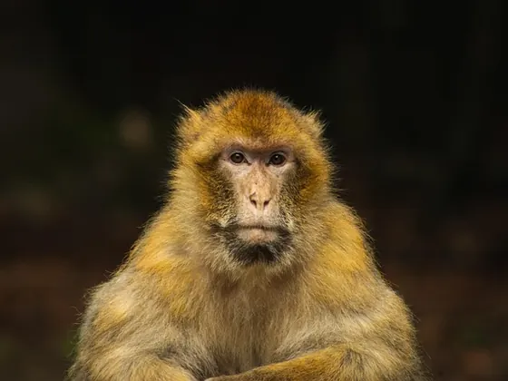
monofeckerle96 · Pixabay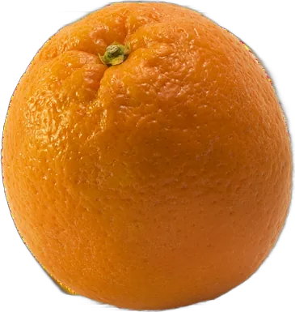
naranjaRalphs_Fotos · Pixabay- nubeDitney · Pixabay
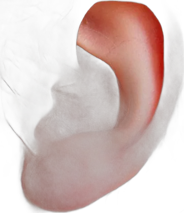
orejaAnemone123 · Pixabay- ositoNo-longer-here · Pixabay
- osomaja7777 · Pixabay
- pajarojggrz · Pixabay
- pandaNathalieBurblis · Pixabay
- papel-arrugadoRamdlon · Pixabay
- papelerablickpixel · Pixabay
- paraguasjah7546 · Pixabay
- patoerwinbosman · Pixabay
- peraMomentmal · Pixabay
- periodicosofisorgin · Pixabay
- perrogarten-gg · Pixabay
- pezstux · Pixabay
- pinguinoAlexas_Fotos · Pixabay
- pizzarstamats · Pixabay
- platanomajacvetojevic · Pixabay
- platoSilberfuchs · Pixabay
- plato-comidaPublicDomainPictures · Pixabay
- pollitoBergadder · Pixabay
- porcion-pizzamarker_photography · Pixabay
- pulpok10a10 · Pixabay
- quesoPDPhotos · Pixabay
- ranaulleo · Pixabay
- ratonShutterbug26 · Pixabay
- relojRalphs_Fotos · Pixabay
- rosaHelgaKa · Pixabay
- sandia41330 · Pixabay
- tamborEfraimstochter · Pixabay
- tigregarten-gg · Pixabay
- tomatePublicDomainPictures · Pixabay
- tortugaRalphs_Fotos · Pixabay
- tren-jugueteJoophotos · Pixabay
- trigoneelam279 · Pixabay
- tulipanmonika1607 · Pixabay
- uvaszillurrahmanraju · Pixabay
- vacagarten-gg · Pixabay
- yoyoluginbuhlta · Pixabay
- zanahoriaMuhammadHammad7788 · Pixabay
- zapatillaolpi · Pixabay
- zorroDigitalDesigner · Pixabay
Otras fotos
Fotografías de Flickr y StockSnap con licencias Creative Commons. Se han recortado y reducido de tamaño (a las de objetos se les ha quitado el fondo); las que tienen licencia CC BY-SA se comparten con esa misma licencia.
- avion-jugueteFrance1978 · FlickrCC BY-SA 2.0
- bebe-lloradonnierayjones · FlickrCC BY 2.0
- bebe-pucherosdonnierayjones · FlickrCC BY 2.0
- bebe-tristeMayra F. · FlickrCC BY 2.0
- bolsa-papelJeffrey Beall · FlickrCC BY-SA 2.0
- magdalenashimelle · FlickrCC BY 2.0
- munecanormanack · FlickrCC BY 2.0
- nina-contentakamsky · FlickrCC BY 2.0
- nina-lagrimabeachgirlnbay · FlickrCC BY-SA 2.0
- nina-llorabradleygee · FlickrCC BY 2.0
- nina-riedonnierayjones · FlickrCC BY 2.0
- nina-sonriephotogramma1 · FlickrCC BY-SA 2.0
- nino-alegrePaul L Dineen · FlickrCC BY 2.0
- nino-cabizbajoPedro Alonso. · FlickrCC BY 2.0
- nino-columpioMonkey Mash Button · FlickrCC BY-SA 2.0
- nino-gorroEmil_95 · FlickrCC BY 2.0
- nino-llorait's me neosiam · StockSnapCC0
- nino-rieOne From RM · FlickrCC BY 2.0
- nino-sonrieMonkey Mash Button · FlickrCC BY-SA 2.0
- nino-tristeMel B. · FlickrCC BY 2.0
- pato-gomavisual.dichotomy · FlickrCC BY 2.0
- pimientoTheo Crazzolara · FlickrCC BY 2.0
- sobreLe Ciel Azuré · FlickrCC BY-SA 2.0